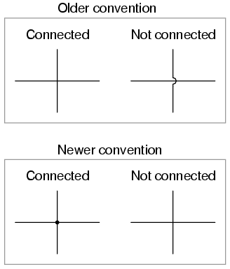
Older electrical schematics showed connecting wires crossing, while non-connecting wires "jumped" over each other with little half-circle marks. Newer electrical schematics show connecting wires joining with a dot, while non-connecting wires cross with no dot. However, some people still use the older convention of connecting wires crossing with no dot, which may create confusion.
For this reason, I opt to use a hybrid convention, with connecting wires unambiguously connected by a dot, and non-connecting wires unambiguously "jumping" over one another with a half-circle mark. While this may be frowned upon by some, it leaves no room for interpretational error: in each case, the intent is clear and unmistakable:
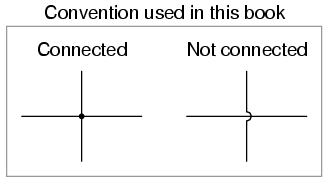
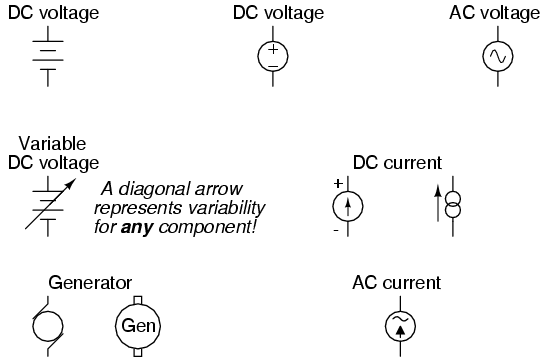
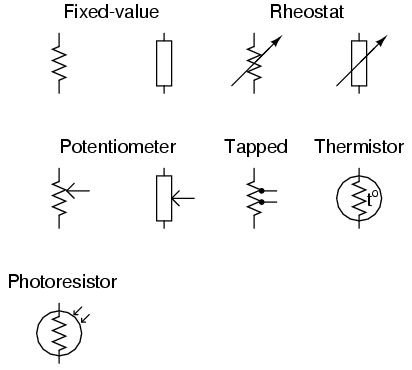
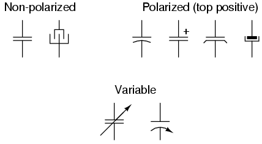
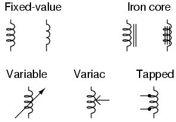
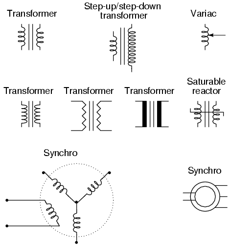
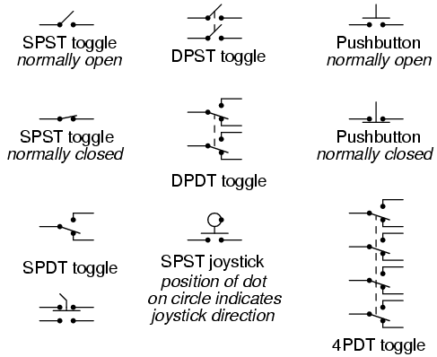
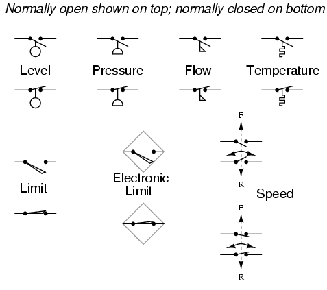
It is very important to keep in mind that the "normal" contact status of a process-actuated switch refers to its status when the process is absent and/or inactive, not "normal" in the sense of process conditions as expected during routine operation. For instance, a normally-closed low-flow detection switch installed on a coolant pipe will be maintained in the actuated state (open) when there is regular coolant flow through the pipe. If the coolant flow stops, the flow switch will go to its "normal" (unactuated) status of closed.
A limit switch is one actuated by contact with a moving machine part. An electronic limit switch senses mechanical motion, but does so using light, magnetic fields, or other non-contact means.
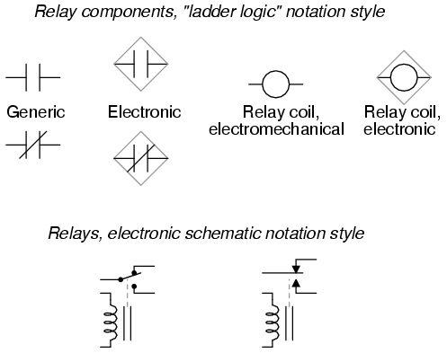
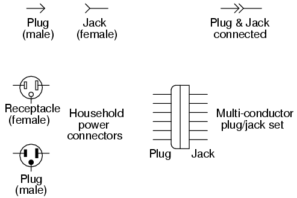
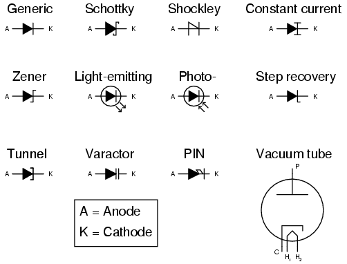
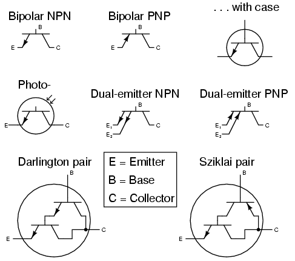
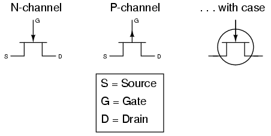
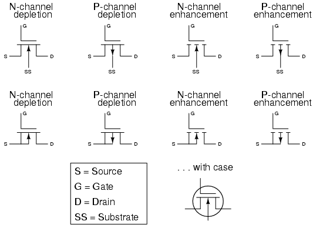
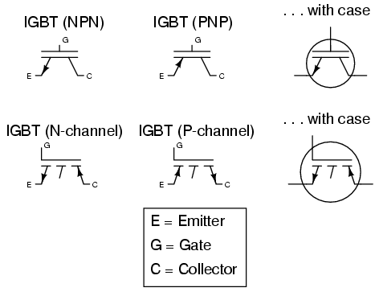
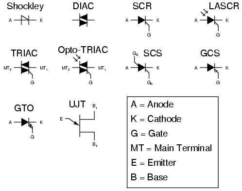
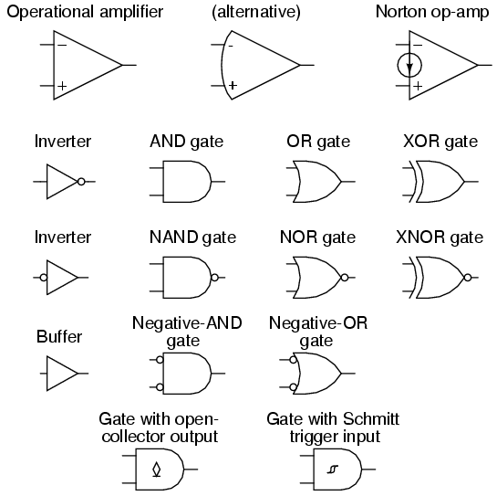
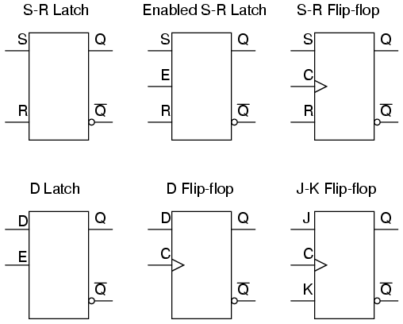
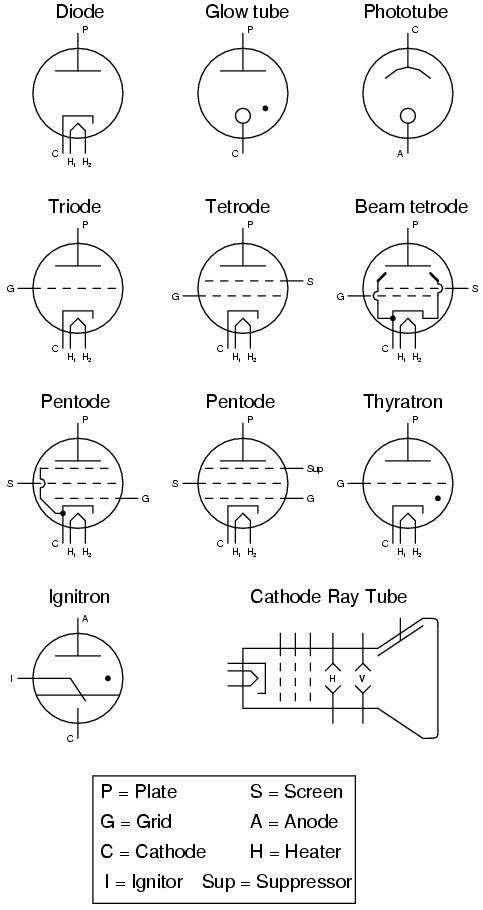
Lessons In Electric Circuits copyright (C) 2000-2023 Tony R. Kuphaldt, under the terms and conditions of the CC BY License.